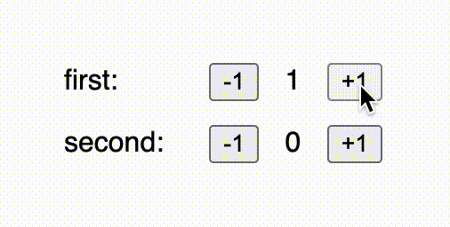
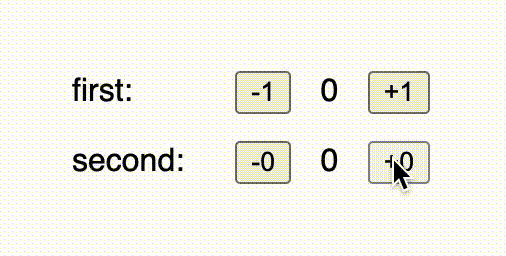

Composition Comparison
What is this?
This repository houses a collection of UI-framework compsition
challenges. It identifies a few patterns for how composing components,
and implements them using Bonsai, Elm, and React
Is this supposed to be unbiased?
Not really
- I’m pretty good at Bonsai, pretty bad at Elm, and my React knowledge
is quite outdated
- I designed Bonsai with automatic component composition as a primary
goal
01 - Components
What is a “UI component” anyway? To me, a component describes a group
of code with the following properties:
- It serves as an abstraction — Users of the
component shouldn’t need to know about any implementation details
- It’s built to be composed with other components —
It’s right there in the name! Components must be robust to being
combined with one another
- Encapsulated — A component shouldn’t leak private
details, nor should it require composition with other components in
order to be useful.
For the rest of this series, we’re going to be looking at ways to
compose a very basic “counter” component.
Defining a component

The counter component that we’ll be building is a basic widget that
maintains a count (as an integer), and two buttons, one to decrease the
stored value, and another to increase it.
Our counter components will be configurable in two ways:
- The user of the counter component can pick a text label to
display
- The caller can also pick the delta by which the increment and
decrement buttons will modify the stored value
The user of the component will also probably want access to the value
in some way, which the component should also provide.
|
Bonsai
|
Elm
|
React
|
open! Core
open! Import
let apply_action _ctx by model = function
| `Incr -> model + by
| `Decr -> model - by
;;
let component ~label ?(by = Bonsai.return 1) graph =
let state, inject = Bonsai.state_machine1 ~default_model:0 ~apply_action by graph in
let view =
let%map state and inject and by and label in
let button op action =
N.button ~attr:(A.on_click (fun _ -> inject action)) [ N.textf "%s%d" op by ]
in
N.div
[ Vdom.Node.span [ N.textf "%s: " label ]
; button "-" Decr
; Vdom.Node.span [ N.textf "%d" state ]
; button "+" Incr
]
in
view, state
;;
|
module Counter exposing (Model, Msg, init, update, view)
import Browser
import Html exposing (Html, div, span, text)
import Html.Events exposing (onClick)
type alias Model =
Int
init : Model
init =
0
type Msg
= Increment
| Decrement
update : Int -> Msg -> Model -> Model
update howMuch msg model =
case msg of
Increment ->
model + howMuch
Decrement ->
model - howMuch
view : Int -> String -> Model -> Html Msg
view howMuch label model =
let
button op action =
Html.button [ onClick action ] [ text (String.concat [ op, String.fromInt howMuch ]) ]
in
div []
[ text (String.concat [ label, ": " ])
, button "-" Decrement
, text (String.fromInt model)
, button "+" Increment
]
|
import React from 'react';
export const defaultState = 0;
export function applyAction(state, action, by) {
switch (action) {
case 'increment':
return state + by;
case 'decrement':
return state - by;
default:
console.error('BUG');
}
}
const Counter = ({ label, by, state, inject }) => {
let increment = () => inject('increment');
let decrement = () => inject('decrement');
return (
<div>
{label}:<button onClick={decrement}> -{by}</button>
{state}
<button onClick={increment}> +{by}</button>
</div>
);
};
export default Counter;
|
|
This Bonsai component is exposed to users through the
component function. You’ll notice that we use regular OCaml
functions to pass properites to the component, like ~label
and the optional ?by parameters.
The component function produces a component that yields
both the view and the counter value. You’ll also notice that in
defining Counter.component, we use
Bonsai.state_machine1. state_machine1 is a
primitive component that we use to build our bigger component. The
1 indicates that the state machine has access to one input
value that it can read when processing an action.
|
This elm component is in the shape of a whole module which exports
its initial model, transition function, and view calculations separately
for the user to compose. Notice how the update function takes an integer
to determine how much the state should be increased or decreased by, and
how the view function also requires that value in addition to a string
to use for the label.
|
If you’re used to React, this code might be a bit confusing at first.
Clearly the counter component is stateful, so why is it exporting a
default state and a state-machine transition function instead of
bundling a call to useState inside the component?
Firstly, useState would be buggy, two clicks of the
button on the same rendering frame would act like it had only been
clicked once, so we’d actually want to pick useReducer.
But beyond that, component-local state like useState and
useReducer is truly component-local, with no way to export
that state to other components like we’d need in the “sequential” and
“multiplicity” sections. Moreover, component-local state vanishes when
the component is unmounted, making it useful only for state that you
want to be transient.
This implies that when a component manipulate state that other pieces
of the application care about, that state needs to be stored and
manipulated outside of the compoennt. This is usually done by
either using a state-management system like Redux, or by pushing the
state into the nearest common ancestor component of any subcomponents
that need to read or write to that state. We’ll be using the latter
approach in order to avoid excess boilerplate.
|
Since Bonsai was originally modeled after the Elm Architecture, it
shouldn’t be super surprising that defining a component looks similar in
both languages. Both focus on the state for a component being modeled as
a state-machine, with explicit model and and action types which
correspond to states and state transitions.
Using a component
The “topmost” component in an application is sometimes referred to as
the “application component”. These can be as big or as small as
necessary, so let’s start out with the smallest app-component possible:
a single counter.
|
Bonsai
|
Elm
|
React
|
open! Core
open! Import
let app graph =
let view, _ = Counter.component ~label:(Bonsai.return "counter") graph in
view
;;
let () = Start.start app
|
module Main exposing (main)
import Browser
import Counter
update =
Counter.update 1
view =
Counter.view 1 "counter"
main =
Browser.sandbox { init = Counter.init, update = update, view = view }
|
import React, { useReducer } from 'react';
import ReactDOM from 'react-dom';
import Counter, { applyAction, defaultState } from '../../shared/Counter';
const App = () => {
let [state, inject] = useReducer(
(state, action) => applyAction(state, action, 1),
defaultState
);
return <Counter label="counter" by={1} state={state} inject={inject} />;
};
ReactDOM.render(<App />, document.getElementById('app'));
|
|
Because the application component is an instance of our counter
component, we need to invoke the component-generating function with its
required parameters. Because we’re fine with the default by
argument being 1, we only need to provide the value for the
label.
|
The Elm component requires passing all the configuration to all the
different pieces of the component separately. Make sure that you keep
both of the by values in sync!
|
Because our components can’t manage their own state, the top-level
application component is where the call to useReducer can
be found, the results of which are passed on to the counter
component.
|
02 - Parallel Composition

“Parallel Composition” is a term that I came up with for describing
the style of composing components that are completely isoloated from one
another. Not only are these components visually separated, they’re also
logically separated, removing or changing one would have no impact on
the other.
|
Bonsai
|
Elm
|
React
|
open! Core
open! Import
let app graph =
let first, _ = Counter.component ~label:(Bonsai.return "first") graph in
let second, _ = Counter.component ~label:(Bonsai.return "second") graph in
let%map first and second in
N.div [ first; second ]
;;
let () = Start.start app
|
module Main exposing (main)
import Browser
import Counter
import Html exposing (Html, div)
type alias Model =
{ first : Counter.Model, second : Counter.Model }
init : Model
init =
{ first = Counter.init, second = Counter.init }
type Msg
= First Counter.Msg
| Second Counter.Msg
update : Msg -> Model -> Model
update msg model =
case msg of
First msg_first ->
{ model | first = Counter.update 1 msg_first model.first }
Second msg_second ->
{ model | second = Counter.update 1 msg_second model.second }
view : Model -> Html Msg
view model =
div []
[ Html.map First (Counter.view 1 "first" model.first)
, Html.map Second (Counter.view 1 "second" model.second)
]
main =
Browser.sandbox { init = init, update = update, view = view }
|
import React, { useReducer } from 'react';
import ReactDOM from 'react-dom';
import Counter, { applyAction, defaultState } from '../../shared/Counter';
const App = () => {
let [state1, inject1] = useReducer(
(state, action) => applyAction(state, action, 1),
defaultState
);
let [state2, inject2] = useReducer(
(state, action) => applyAction(state, action, 1),
defaultState
);
return (
<div>
<Counter label="first" by={1} state={state1} inject={inject1} />
<Counter label="second" by={1} state={state2} inject={inject2} />
</div>
);
};
ReactDOM.render(<App />, document.getElementById('app'));
|
For Bonsai, we use call the component function multiple times to create
new instances of it, and then let%arr to compose the views
produced by those instances.
|
In Elm there’s some more boilerplate involved. The
application-component is now bigger, and that means that we need a new
model and action type to go along with it.
Just like in the Bonsai example, we need to compose the views of
these components manually (there’s no way around this if you want
precise control of the view). However, we also need to call
Html.map, which is used to transform the type of the
message produced by the view.
More apparent is our need to implement an update
function which dispatches actions to the correct component.
|
Parallel composition is very similar to the previous example. The
duplicate boilerplate to set up state is a bit unfortunate though.
|
Fun fact: Bonsai got its name from parallel-composition! If you
visualize the structure of components that are composed in parallel, it
looks like a little tree; hence the name “Bonsai!” Sadly it wasn’t until
after 1.0 that we realized that its real power was sequential
composition…
03 - Sequential Composition

Components are composed sequentially when there’s a dependency
relationship between them. They are no longer independent, and the state
of one component can influence the other.
In this demo, we’ll use the counter value of one component to modify
the delta parameter on the other.
|
Bonsai
|
Elm
|
React
|
open! Core
open! Import
let app graph =
let first_view, by = Counter.component ~label:(Bonsai.return "first") graph in
let second_view, _ = Counter.component ~label:(Bonsai.return "second") ~by graph in
let%map first = first_view
and second = second_view in
N.div [ first; second ]
;;
let () = Start.start app
|
module Main exposing (main)
import Browser
import Counter
import Html exposing (Html, div)
type alias Model =
{ first : Counter.Model, second : Counter.Model }
init : Model
init =
{ first = Counter.init, second = Counter.init }
type Msg
= First Counter.Msg
| Second Counter.Msg
update : Msg -> Model -> Model
update msg model =
case msg of
First msg_first ->
{ model | first = Counter.update 1 msg_first model.first }
Second msg_second ->
{ model | second = Counter.update model.first msg_second model.second }
view : Model -> Html Msg
view model =
div []
[ Counter.view 1 "first" model.first |> Html.map First
, Counter.view model.first "second" model.second |> Html.map Second
]
main =
Browser.sandbox { init = init, update = update, view = view }
|
import React, { useReducer } from 'react';
import ReactDOM from 'react-dom';
import Counter, {
applyAction as counterApplyAction,
defaultState as counterDefaultState,
} from '../../shared/Counter';
const defaultState = {
first: counterDefaultState,
second: counterDefaultState,
};
function applyAction(state, { which, subAction }) {
switch (which) {
case 'first':
return {
...state,
first: counterApplyAction(state.first, subAction, 1),
};
case 'second':
return {
...state,
second: counterApplyAction(state.second, subAction, state.first),
};
}
}
const App = () => {
let [state, inject] = useReducer(applyAction, defaultState);
let injectFirst = (subAction) => inject({ which: 'first', subAction });
let injectSecond = (subAction) => inject({ which: 'second', subAction });
return (
<div>
<Counter label="first" by={1} state={state.first} inject={injectFirst} />
<Counter
label="second"
by={state.first}
state={state.second}
inject={injectSecond}
/>
</div>
);
};
ReactDOM.render(<App />, document.getElementById('app'));
|
|
We finally get to use the extra return value from
Counter.component! We bind the value, and immediately pass
it into the next component through its optional parameter. The rest of
the code should be very familiar.
|
On the Elm side, the code looks very similar to the code from the
“parallel composition” example above, but the differences matter a lot!
The main change is that calling the second counter-component’s
update and view functions, instead of passing
in 1 for “how much to increase or decrease the value by”,
we reach in to the model of the first component to pull out the
currently stored value. I’ll be honest, this makes me feel a bit icky;
I’d love to know if there’s a better way to do this.
|
Sequential composition for React starts looking a lot more like the
Elm example. It would be reasonable to look at this code and ask the
question “why are you building a big reducer instead of applying two
smaller reducers?” The reason is that with separate reducers,
transformations applied at the same time will not be able to witness one
another. In many scenarios, this kind of race condition is important to
handle manually, and the only way to do so is by putting all the actions
inside the same reducer.
|
04 - Multiplicity

So far we’ve dealt with a constant number of components, but
determining the number of components in an app at runtime is a common
requirement. For this example, we’ll use the current value of one
counter component to determine how many more counter-components should
be on the page.
An important additional restriction is that subcomponent state should
be persisted for compoenents even when they aren’t currently active.
|
Bonsai
|
Elm
|
React
|
open! Core
open! Import
let app graph =
let counter_view, how_many = Counter.component ~label:(Bonsai.return "how many") graph in
let map =
let%map how_many in
List.init how_many ~f:(fun i -> i, ()) |> Int.Map.of_alist_exn
in
let others = Bonsai.assoc (module Int) map graph ~f:(fun key _data graph ->
let view, _ = Counter.component ~label:(key >>| Int.to_string) graph in
view)
in
let%map counter_view and others in
N.div (counter_view :: Map.data others)
;;
let () = Start.start app
|
module Main exposing (main)
import Browser
import Counter
import Dict exposing (Dict)
import Html exposing (Html, div, map)
type alias Model =
{ howMany : Counter.Model, others : Dict Int Counter.Model }
init : Model
init =
{ howMany = Counter.init, others = Dict.empty }
type Msg
= HowMany Counter.Msg
| ForKey Int Counter.Msg
updateOther which msg =
Dict.update which
(\m ->
Just (Counter.update 1 msg (Maybe.withDefault 0 m))
)
update : Msg -> Model -> Model
update appMsg model =
case appMsg of
HowMany msgHowMany ->
{ model | howMany = Counter.update 1 msgHowMany model.howMany }
ForKey which msg ->
{ model | others = updateOther which msg model.others }
viewOther : Dict Int Counter.Model -> Int -> Html Counter.Msg
viewOther models key =
case Dict.get key models of
Just model ->
Counter.view 1 (String.fromInt key) model
Nothing ->
Counter.view 1 (String.fromInt key) Counter.init
view : Model -> Html Msg
view model =
List.range 0 (model.howMany - 1)
|> List.map (\i -> Html.map (ForKey i) (viewOther model.others i))
|> List.append [ Html.map HowMany (Counter.view 1 "how many" model.howMany) ]
|> div []
main =
Browser.sandbox { init = init, update = update, view = view }
|
import React, { useReducer } from 'react';
import ReactDOM from 'react-dom';
import Counter, {
applyAction as counterApplyAction,
defaultState as counterDefaultState,
} from '../../shared/Counter';
const defaultState = {};
function applyAction(state, { which, subAction }) {
return {
...state,
[which]: counterApplyAction(state[which] || 0, subAction, 1),
};
}
const App = () => {
let [howMany, injectHowMany] = useReducer(
(state, action) => counterApplyAction(state, action, 1),
counterDefaultState
);
let [subcomponentState, subcomponentInject] = useReducer(applyAction, defaultState);
let subcomponents = Array.from({ length: howMany }, function (_, i) {
let injectMe = (subAction) => subcomponentInject({ which: i, subAction });
return (
<Counter
key={i}
label={i}
by={1}
state={subcomponentState[i] || 0}
inject={injectMe}
/>
);
});
return (
<div>
<Counter label="how many" by={1} state={howMany} inject={injectHowMany} />
{subcomponents}
</div>
);
};
ReactDOM.render(<App />, document.getElementById('app'));
|
|
For Bonsai, this one is a bit hacky, I’ll admit!
Bonsai.assoc reads an input map and creates an instance of
the provisded component for each key/value pair in the map. Because it
needs that input map, we first make a map from int to
unit, and pass that into assoc. Usually
assoc is given a map that actually has some meaning - like
rows in a table - and aren’t built at the last second just to give to
the function.
|
I’ll admit, I know this code could be written better, but I don’t
really know where to start. One thing is certain though; the pattern of
storing models in a map and keeping the model map separate from the
“what is visible” state is necessary, so I think this general pattern
will always exist.
|
For this one, the subcomponent state and the “how many” state are
actually independent, so we can use two useReducer calls
again! One of these reducers is for the bag of states that are necessary
for rendering the dynamic components.
|